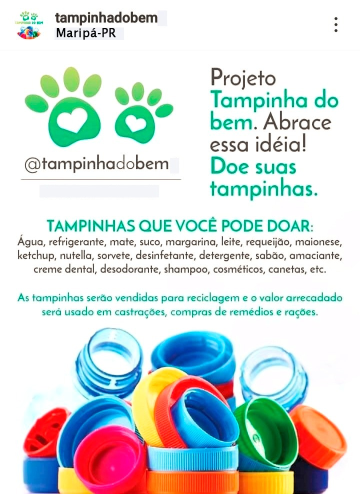

- "FITA REAGENTE PARA DETECTAR RESÍDUOS DE AGROTÓXICOS EM HORTALIÇAS"
- A POSSIBILIDADE DA UTILIZAÇÃO DOS AMIDOS DE MANDIOCA E BATATA PARA A PRODUÇÃO DE BIOPLÁSTICO
- VASO BIODEGRADÁVEL
- ABELHAS – SUA VIDA DEPENDE DELAS
- ADUBO PARA HORTALIÇAS UTILIZANDO MATÉRIA ORGÂNICA ACUMULADA NO FUNDO DE TANQUES DE PISCICULTURA
- O estudo do fator Ph como indicador da qualidade da água de rios do município de Maripá e possíveis soluções para os problemas detectados
- ECO-CAR SUSTENTÁVEL
- Paver sustentável : uma ideia ecologicamente viável, a partir da borracha de pneus inutilizáveis
- PLÁSTICO BIODEGRADÁVEL COM A FIBRA DA FOLHA DO ABACAXI
- Medicamento,Alimento e Embelezamento:Tudo em uma única Planta ?
- EMBALAGENS BIODEGRADÁVEIS
- Sacola Biodegradável - Uma proposta de reciclagem de papel fazendo uso de sementes de hortaliças ou de flores impregnadas na mesma.
- Bomba Carneiro
- VIABILIDADE DO USO DO FARELO DO SABUGO DE MILHO COMO ISOLANTE TÉRMICO E ACÚSTICO NA FABRICAÇÃO DE TELHAS
- EXTRATO DE ARTEMISIA ABSINTHIUM COMO ADITIVO NATURAL EM RAÇÃO DE PEIXE
- O USO DA TELHA DE FARELO DE SABUGO DE MILHO NA COBERTURA DE AVIÁRIOS
- PRODUÇÃO E VIABILIDADE DE PLACAS DE GESSO RECICLADO PARA MELHORA DO ISOLAMENTO ACÚSTICO
- GLITTER E TINTAS BIODEGRADÁVEIS
- Mosquitueiro e Gel de Eucalipto como repelente spray de citronela
- PLACAS FIBRO-CIMENTO
-
𝗖𝗼𝗹𝗲𝘁𝗮 𝗦𝗲𝗹𝗲𝘁𝗶𝘃𝗮

𝙸𝚗𝚌𝚕𝚞𝚒𝚛 𝚊𝚝𝚒𝚟𝚒𝚍𝚊𝚍𝚎𝚜 𝚍𝚎 𝚌𝚘𝚕𝚎𝚝𝚊 𝚜𝚎𝚕𝚎𝚝𝚒𝚟𝚊 𝚎́ 𝚎𝚜𝚜𝚎𝚗𝚌𝚒𝚊𝚕 𝚙𝚊𝚛𝚊 𝚐𝚊𝚛𝚊𝚗𝚝𝚒𝚛 𝚞𝚖 𝚍𝚎𝚜𝚎𝚗𝚟𝚘𝚕𝚟𝚒𝚖𝚎𝚗𝚝𝚘 𝚜𝚞𝚜𝚝𝚎𝚗𝚝𝚊́𝚟𝚎𝚕 𝚗𝚊𝚜 𝚜𝚘𝚌𝚒𝚎𝚍𝚊𝚍𝚎𝚜, 𝚛𝚎𝚍𝚞𝚣𝚒𝚗𝚍𝚘 𝚐𝚛𝚊𝚗𝚍𝚎𝚖𝚎𝚗𝚝𝚎 𝚘 𝚍𝚎𝚜𝚌𝚊𝚛𝚝𝚎 𝚒𝚗𝚌𝚘𝚛𝚛𝚎𝚝𝚘 𝚍𝚘 𝚕𝚒𝚡𝚘 𝚙𝚎𝚕𝚘 𝚖𝚞𝚗𝚍𝚘.
𝙽𝚘 𝙲𝚘𝚕𝚎́𝚐𝚒𝚘 𝙴𝚜𝚝𝚊𝚍𝚞𝚊𝚕 𝙿𝚒𝚘 𝚇𝙸𝙸 𝚘𝚜 𝚊𝚕𝚞𝚗𝚘𝚜 𝚎 𝚝𝚘𝚍𝚘𝚜 𝚘𝚜 𝚝𝚛𝚊𝚋𝚊𝚕𝚑𝚊𝚍𝚘𝚛𝚎𝚜 𝚍𝚊 𝚎𝚍𝚞𝚌𝚊𝚌̧𝚊̃𝚘 𝚜𝚊̃𝚘 𝚘𝚛𝚒𝚎𝚗𝚝𝚊𝚍𝚘𝚜 𝚊:
𝚁𝚎𝚊𝚕𝚒𝚣𝚊𝚛 𝚊𝚌̧𝚘̃𝚎𝚜 𝚍𝚎 𝚌𝚘𝚕𝚎𝚝𝚊 𝚜𝚎𝚕𝚎𝚝𝚒𝚟𝚊 𝚍𝚘𝚜 𝚛𝚎𝚜𝚒́𝚍𝚞𝚘𝚜 𝚙𝚛𝚘𝚍𝚞𝚣𝚒𝚍𝚘𝚜 𝚗𝚊 𝚎𝚜𝚌𝚘𝚕𝚊;
𝙲𝚊𝚛𝚛𝚎𝚐𝚊𝚛 𝚞𝚖𝚊 𝚐𝚊𝚛𝚛𝚊𝚏𝚊 𝚏𝚒𝚡𝚊 𝚍𝚎 𝚊́𝚐𝚞𝚊 𝚙𝚊𝚛𝚊 𝚎𝚟𝚒𝚝𝚊𝚛 𝚌𝚘𝚖𝚙𝚛𝚊𝚛 𝚐𝚊𝚛𝚛𝚊𝚏𝚊𝚜 𝚍𝚎 𝚙𝚕𝚊́𝚜𝚝𝚒𝚌𝚘;
𝚃𝚎𝚛 𝚞𝚖 𝚌𝚘𝚙𝚘 𝚘𝚞 𝚌𝚊𝚗𝚎𝚌𝚊 𝚗𝚘 𝚝𝚛𝚊𝚋𝚊𝚕𝚑𝚘 𝚙𝚊𝚛𝚊 𝚋𝚎𝚋𝚎𝚛 𝚕𝚒́𝚚𝚞𝚒𝚍𝚘𝚜 𝚍𝚒𝚟𝚎𝚛𝚜𝚘𝚜.
-
𝗣𝗿𝗼𝗷𝗲𝘁𝗼 𝗧𝗮𝗺𝗽𝗶𝗻𝗵𝗮 𝗱𝗼 𝗕𝗲𝗺
𝙽𝚎𝚜𝚜𝚎 𝚙𝚛𝚘𝚓𝚎𝚝𝚘 𝚘𝚜 𝚊𝚕𝚞𝚗𝚘𝚜 𝚝𝚛𝚊𝚣𝚎𝚖 𝚝𝚊𝚖𝚙𝚒𝚗𝚑𝚊𝚜 𝚍𝚎 𝚐𝚊𝚛𝚛𝚊𝚏𝚒𝚗𝚑𝚊𝚜 𝚍𝚎 𝚊́𝚐𝚞𝚊, 𝚛𝚎𝚏𝚛𝚒𝚐𝚎𝚛𝚊𝚗𝚝𝚎, 𝚜𝚞𝚌𝚘, 𝚕𝚎𝚒𝚝𝚎, 𝚛𝚎𝚚𝚞𝚎𝚒𝚓𝚊̃𝚘 , 𝚜𝚑𝚊𝚖𝚙𝚘𝚘, 𝚍𝚎𝚝𝚎𝚛𝚐𝚎𝚗𝚝𝚎, 𝚊𝚖𝚊𝚌𝚒𝚊𝚗𝚝𝚎 ,𝚎𝚝𝚌.
𝙰𝚜 𝚝𝚊𝚖𝚙𝚒𝚗𝚑𝚊𝚜 𝚜𝚊̃𝚘 𝚟𝚎𝚗𝚍𝚒𝚍𝚊𝚜 𝚙𝚊𝚛𝚊 𝚛𝚎𝚌𝚒𝚌𝚕𝚊𝚐𝚎𝚖𝚎 𝚘 𝚟𝚊𝚕𝚘𝚛 𝚊𝚛𝚛𝚎𝚌𝚊𝚍𝚊𝚍𝚘 𝚎́ 𝚞𝚜𝚊𝚍𝚘 𝚙𝚊𝚛𝚊 𝚌𝚘𝚖𝚙𝚛𝚊 𝚍𝚎 𝚛𝚊𝚌̧𝚘̃𝚎𝚜, 𝚛𝚎𝚖𝚎́𝚍𝚒𝚘𝚜 𝚎 𝚌𝚊𝚜𝚝𝚛𝚊𝚌̧𝚘̃𝚎𝚜 𝚍𝚎 𝚐𝚊𝚝𝚘𝚜 𝚎 𝚌𝚊𝚌𝚑𝚘𝚛𝚛𝚘𝚜 𝚍𝚎 𝚛𝚞𝚊.
𝗣𝗿𝗼𝗷𝗲𝘁𝗼𝘀 𝗱𝗲 𝗜𝗻𝗶𝗰𝗶𝗮𝗰̧𝗮̃𝗼 𝗖𝗶𝗲𝗻𝘁𝗶́𝗳𝗶𝗰𝗮 𝗿𝗲𝗮𝗹𝗶𝘇𝗮𝗱𝗼𝘀 𝗲𝗺 𝟮𝟬𝟭𝟳,𝟮𝟬𝟭𝟴 𝗲 𝟮𝟬𝟭𝟵